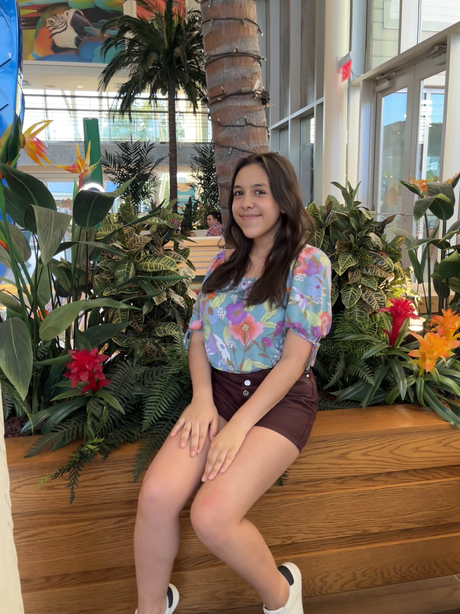

Background information about me!
Hi friends! I’m Daniela S. I'm a 15-year-old girl borned in Tachira, Venezuela but currently living in Texas. I'm an upcoming junior, and I really enjoy coding. I’m actually taking a computer science class this next year. I speak Spanish and English fluently. I'm also trying to learn French since it's also in the Romance branch, and I've always being attracted to it. I love the outdoors and taking pictures of everything. In my high school, I'm a current Community Service officer in Student Council. I have participated in many leadership events and want to continue ahead. With this website I want to introduce you to my life. Hope you enjoy!
